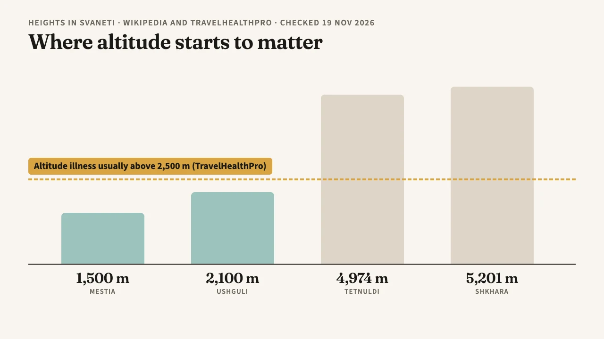

- Mestia
- 1,500 m
- Ushguli
- 2,100 m
- Altitude sickness usually above
- 2,500 m
- Shkhara
- 5,201 m
- Zugdidi from Mestia
- 128 km
- Emergency
- 112
This page is about Georgia the country, not the US state, and is part of the Georgia Travel Guide. Checked on 19 November 2026.
Mestia and the Svan towers
The small town is a common base for trips into the region. According to Wikipedia, it sits at 1,500 m and had 1,973 residents at the 2014 census.
The towers. Stone tower houses rise above the roofs. Wikipedia says the town contains medieval monuments "included in a list of UNESCO World Heritage Sites".
Around the town. Wikipedia describes the wider region as "surrounded by 3,000–5,000 meter peaks" and calls it "the highest inhabited area in the Caucasus". Among those peaks are Ushba at 4,710 m and Tetnuldi at 4,974 m.
The airport. Wikipedia says the town is "served by the Queen Tamar Airport, which is operated by the state-owned company United Airports of Georgia since 2010". More on getting there below.

Ushguli: five villages at 2,100 m
Ushguli is not one village but a cluster of them. Wikipedia describes "a community of five medieval villages located at the head of the Enguri gorge", "at an altitude of 2,100 metres… near the foot of Shkhara".
Shkhara. The broad snowy mountain behind the villages is the highest in Georgia, at 5,201 m, according to Wikipedia's page on the region.
Lamaria. The church of Lamaria, dated by Wikipedia to the 12th century, stands in Zhibiani, one of the five villages.
UNESCO. Wikipedia lists the community within the Upper Svaneti World Heritage Site, inscribed in 1996.
Living at height. Wikipedia calls the community "one of the highest continuously inhabited settlements in Europe". We quote that wording and nothing stronger.
Snow. Wikipedia says the community is "snow-covered for 6 months of the year, and often the road to Mestia is impassable". If you plan a visit outside summer, read the section on seasons first.

Hikes from Mestia: Koruldi Lakes and Chalaadi Glacier
Two walks from town lead to the Koruldi Lakes and to the Chalaadi Glacier.
What official advice does say applies to both. The UK's safety advice for Georgia warns: "If you get into trouble during hiking, skiing, adventure travel or extreme sports, the emergency response may be limited." In its note on skiing it adds: "It can be difficult to get accurate information on mountain conditions, including avalanche risks."
Our tip: before you set off:
- ask your host or a local guide about the path, snow and weather that day;
- tell someone where you are going and when you expect to be back;
- carry water, a charged phone and a warm layer;
- turn back if the weather changes or anyone in the group feels unwell.
Guides. The same UK page says: "If you're doing extreme sports, consider going with specialist guides." If you are unsure of the route or your fitness, a guide is the safer choice.
Our tip. Keep the first day after arrival for a short walk around town. The higher trails can wait until you know how you feel.

Mestia to Ushguli: the trek and the road
You can walk between the two or go by road. We do not quote distances or travel times: the figures we found online were not confirmed by an official source.
On foot. The route crosses high, remote country, so the UK warning about limited emergency response on hikes applies in full.
By road. Snow decides whether the road is usable. Wikipedia notes that the road out of Ushguli is often impassable during the long snowy season. Our tip: ask your host about it the evening before, not on the morning you leave.
Our tip.
- Walk the trek with a local guide if you have not hiked in high mountains before.
- Tell your host which route you are taking and where you plan to sleep next.
- Agree a time by which you will message them, so someone notices if you do not arrive.
Altitude sickness in Svaneti
It can happen here, mostly on the higher hikes and climbs. The UK's health advice for Georgia says altitude sickness "is a risk in parts of Georgia, including Gudauri ski resort, Mount Kazbegi, and Mount Tetnuldi".
Where it starts. TravelHealthPro, the UK factsheet that GOV.UK points to, says the illness usually appears "above 2,500m". It defines high ground as "an elevation above 1,500m". The town sits right on that line and the five villages above it; some walks climb higher still. Susceptible people can feel it lower down, though that is rare.
Prevention. "The key to preventing high altitude illness is gradual ascent with regular rests [sic] days," the factsheet says. People with a long-term condition should see their own doctor before the trip.
The signs. Symptoms usually begin 6–10 hours after you go above 2,500 m. The typical picture is a headache in someone not yet used to the height, plus at least one of: nausea, vomiting, loss of appetite, dizziness, tiredness or weakness. TravelHealthPro advises treating any new symptom after a climb as mountain sickness until proved otherwise.
What to do:
- do not go higher; the symptoms often pass in 1–3 days;
- rest; ordinary painkillers such as ibuprofen or paracetamol, and a remedy for nausea if needed, can help;
- go down if you feel worse or no better after 1–2 days.
Severe forms. Swelling of the brain (HACE) or of the lungs (HAPE) can kill. "Severe altitude illness is a life-threatening condition and requires urgent attention." TravelHealthPro describes HACE as "confusion, altered consciousness and or incoordination", and HAPE as breathlessness that may progress to "breathlessness at rest" and a wet cough. Go down to a lower altitude and get medical help: dial 112. It also says: "Never leave an individual with altitude illness alone."
For skiing, evacuation and the full advice, read our guide to Gudauri and the mountains.


When to go: summer trails, winter snow
Choose the season by what you want to do: snow shapes the year here.
Summer. Our tip: plan the walks for the months without snow, and still ask locally about the paths before you set off.
Winter. Ushguli is "snow-covered for 6 months of the year", Wikipedia says, and the road to it is often impassable. Our tip: leave spare days in your plan in case you cannot get in or out.
Skiing. Georgia's Ministry of Internal Affairs announced in 2021 that ski patrols and mountain rescuers had started work at winter resorts, Mestia's Tetnuldi and Hatsvali among them. We found no newer announcement for this season.
Getting to Mestia
There are two ways in: by road from the lowlands or by air. Wikipedia places the town "some 128 kilometres" north-east of Zugdidi, the regional capital.
By road. Driving times depend on the season, the weather and the state of the road. In winter, ask about conditions before you leave.
By air. The town has the Queen Tamar Airport. Check the current timetable with the airport or the carrier before you plan around a flight.
Our tip. Bring enough of your regular medicines for the whole stay.
Hospitals and medical help in Svaneti
Plan for serious care to be a long way off. The UK's health advice says: "Outside Tbilisi, medical facilities are limited." It adds: "You or your travel insurer will need to pay for all treatment as it's provided."
Rural areas. The Government of Canada's travel advice, updated 27 August 2026, says: "In rural areas, there are shortages of medical supplies and personnel." It adds: "First responders may not be able to access rural areas." In the mountains, weather and distance can slow help further.
Is there a hospital in Mestia? We could not find an official description of one, its services or its hours. Do not plan your trip around one.
In an emergency. Dial 112 and ask for an ambulance. Here is how to call an ambulance on 112 and what to say. Our tip: give the village name and the trail you are on, not just the name of the town.
Clinics in Zugdidi. Zugdidi is the regional capital, some 128 km from Mestia. The catalogue of clinics in Zugdidi on 100doc.ge listed 39 clinics when we checked on 19 November 2026.
Your cover. Visitors need health and accident cover of at least 30,000 GEL for the whole stay; see the entry rule on travel insurance. For hiking, the UK advice is plain: "Make sure your travel insurance covers your activities." What a policy says about walking and sport is covered in our mountain guide.
Other mountain areas. The same advice applies in Kazbegi, another high mountain area of Georgia.
Frequently asked questions
How high are Mestia and Ushguli?
Can you get altitude sickness in Svaneti?
Can you fly to Mestia?
Is the road to Ushguli open in winter?
Is there a hospital in Mestia?
We found no official description of one. For an emergency, dial 112. For a choice of clinics, look to Zugdidi, the regional capital.
Do I need a guide for the hikes?
Sources
- Wikipedia: Mestia (secondary source) ↑
- Wikipedia: Ushguli (secondary source) ↑
- Wikipedia: Svaneti (secondary source) ↑
- GOV.UK travel advice for Georgia: health ↑
- GOV.UK travel advice for Georgia: safety and security ↑
- TravelHealthPro: illness at height factsheet ↑
- Government of Canada: travel advice for Georgia, health ↑
- Ministry of Internal Affairs: patrols at winter resorts, 2021 ↑
- Legislative Herald of Georgia: Government Resolution No. 602 on entry insurance for tourists (Georgian) ↑
This guide is general information, not medical advice: the doctor decides on your care.